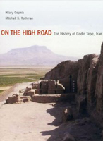

Hilary Gopnik and Mitchell Rothman
On the High Road: The History of Godin Tepe, Iran
Costa Mesa, CA: Mazda Publishers, 2011
|  | The site of Godin Tepe is located in the southeastern corner of the Kangavar valley in central western Iran, at the western end of the Silk Road. Excavated by the late T. Cuyler Young Jr. under the auspices of the Royal Ontario Museum from 1965 to 1973, Godin provides the longest continuous sequence of occupation of any archaeological site in central western Iran. On the High Road will trace the 4000-year history of this uniquely important settlement and demonstrate how, at each successive phase of occupation, the people of Godin exploited their home's position at the crossroads of cultures. "On the High Road" will provide the first major publication of the material remains from Godin. The assemblage of artifacts includes over ten thousand pottery sherds and elaborately painted vessels; about seven hundred unique stone, ceramic, bone, and metal objects including jewelry, bronze drinking bowls, and clay animal figurines; some of the earliest clay tablets and sealings from Iran; and hundreds of samples of organic material and animal bone which have provided evidence for early wine and beer production. The long overdue publication of Godin will constitute a major contribution to the scholarship of the archaeology of the Near East and will provide a fitting culmination to one of the most important archaeological projects of Iranian archaeology from the last half of the 20th century. The book will also serve as a record of the lifework of former ROM director and internationally respected scholar of early Iranian history, the late T. Cuyler Young Jr. "On the High Road" will be aimed at a broad readership. The authors will weave a narrative of the remarkable 4000-year history of Godin while explaining how archaeological remains are used to reconstruct the past. Select architectural plans and reconstructions as well as photos and drawings of the most complete objects will illustrate the art and architecture of the various phases at the site, and will also be used to demonstrate how artifacts can offer us clues into the social, economic, and spiritual lives of the people that used them. The printed volume will be supplemented by an extensive online database that will provide further detail and illustration for those scholars in search of more indepth information about the site. This innovative approach to publishing Godin Tepe will make this important site accessible to a wider audience than can be served by a traditional site report, while at the same time providing the data that is required for future scholarship. |
{kind=link}
| Back to Publications |